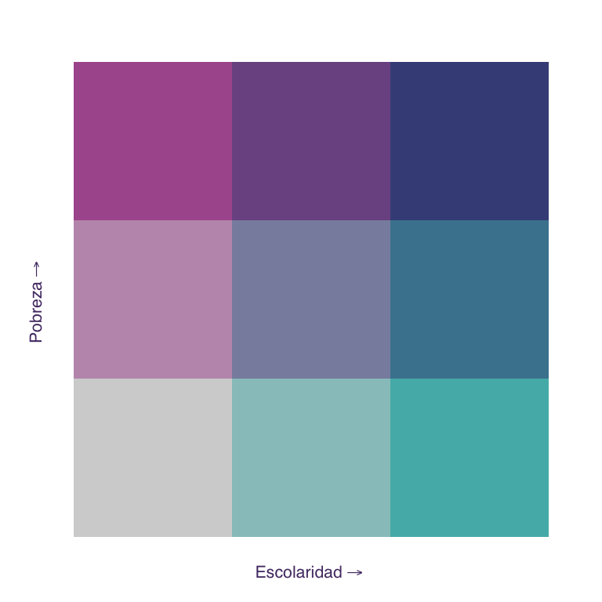
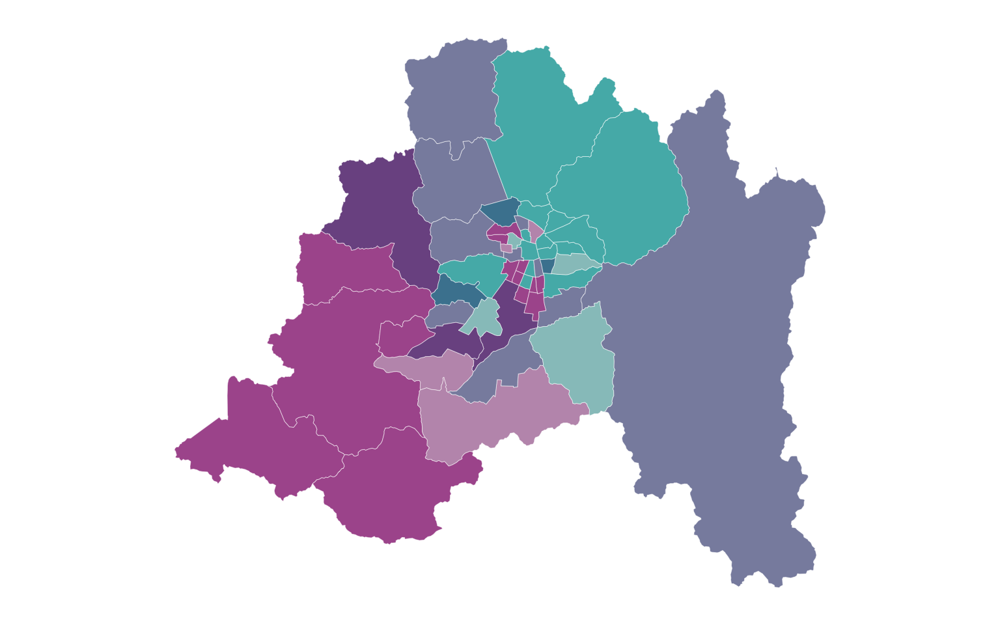
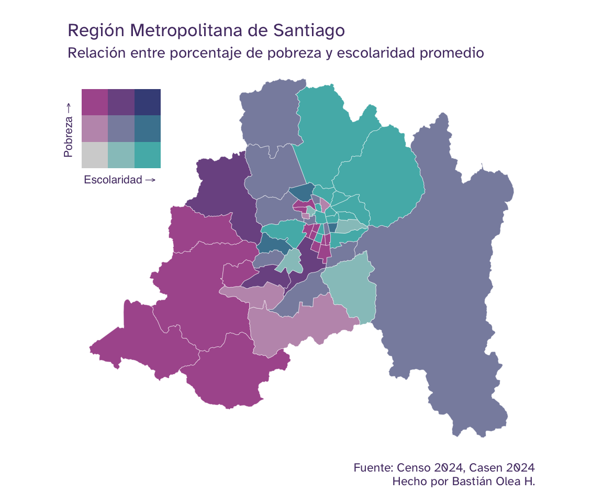
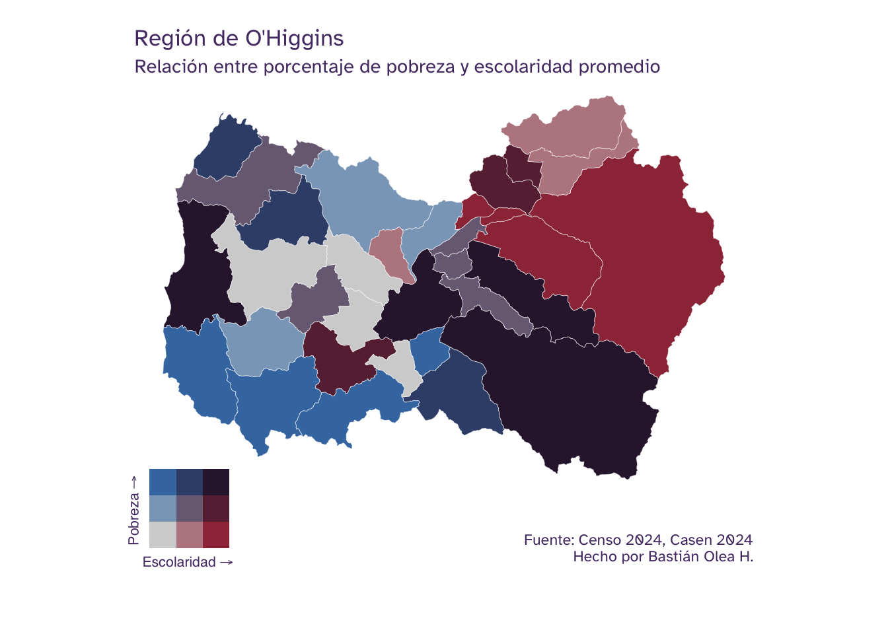

Crea mapas bivariados en R para visualizar la relación entre dos variables
Visualización de datos geoespaciales por polígonos bivariados
17/7/2026
Normalmente, cuando creamos un mapa que visualice datos mediante color sólo podemos mostrar un fenómeno a la vez: la población de cada territorio, el ingreso promedio, el porcentaje de algo, etc. Pero, ¿qué pasa si queremos observar cómo se relacionan dos variables en un mismo mapa? Para eso existen los mapas bivariados! En vez de usar una escala de colores en una sola dimensión (por ejemplo, un color que va desde claro a oscuro), un mapa bivariado usa una paleta de colores en dos dimensiones: una cuadrícula de colores donde cada eje representa una variable distinta. De este modo, el color de cada territorio nos indica al mismo tiempo el valor de las dos variables, y podemos detectar visualmente en qué lugares ambas coinciden en ser altas, bajas, o una alta y la otra baja.
En este tutorial crearemos un mapa bivariado de nivel comunal que cruza el promedio de escolaridad, obtenido del Censo de Población y Vivienda 2024, con la pobreza por ingresos, estimada por el Ministerio de Desarrollo Social de Chile.
Obtención de datos
Nuestro objetivo es obtener una tabla con dos indicadores por comuna:
- Promedio de años de escolaridad de los habitantes de cada comuna de Chile, según el Censo 2024.
- Porcentaje de personas en situación de pobreza por ingresos, según las estimaciones comunales realizadas por el Ministerio de Desarrollo Social en 2024.
Como los datos vienen de dos fuentes distintas, los prepararemos por separado y luego los uniremos por comuna.
Escolaridad según el Censo 2024
Los datos de escolaridad los obtenemos del Censo, que ya hemos usado en tutoriales anteriores, donde también vimos cómo descargar los microdatos y cargarlos como base de datos. Aquí repasaremos el proceso de forma más resumida, así que si no tienes experiencia con este conjunto de datos te recomiendo revisar ese tutorial primero.
Tutorial relacionado

Lo primero es descargar los microdatos del Censo, disponibles en su sitio oficial, en el archivo Base de microdatos - Viviendas, hogares, personas Censo 2024 (parquet).
Cargamos la base de personas con la función open_dataset() de {arrow}, que abre los datos como
una base de datos: esto significa que podemos filtrar y consultar millones de observaciones de forma eficiente, incluso cuando los datos son más grandes que la memoria de nuestras computadoras, y solamente cuando terminamos de manipular los datos copiamos los resultados a la memoria con la función collect().
library(arrow)
personas <- open_dataset("personas_censo2024.parquet")
Publicaciones relacionadas

La base de personas incluye la variable escolaridad, que corresponde a los años de escolaridad de cada persona. Para calcular el promedio comunal, primero filtramos los valores válidos (escolaridad != 99) y consideramos solamente a personas de 25 años o más ([^1] >= 25)1, edad a la que la mayoría ya completó su trayectoria educativa.
Luego agrupamos por comuna y calculamos el promedio con summarize(), y recién ahí traemos el resultado (ya resumido) a la memoria con collect().
library(dplyr)
escolaridad_comuna <- personas |>
filter(escolaridad != 99) |>
filter(edad_quinquenal >= 25) |>
rename(codigo_comuna = comuna) |>
group_by(codigo_comuna) |>
summarize(escolaridad = mean(escolaridad)) |>
collect() # traer los resultados a la memoria
escolaridad_comuna
# A tibble: 346 × 2
codigo_comuna escolaridad
<int> <dbl>
1 5802 10.9
2 4303 9.07
3 11202 10.5
4 1101 11.6
5 8301 11.2
6 13124 10.9
7 8111 11.2
8 14108 9.44
9 13101 13.1
10 13603 10.6
# ℹ 336 more rows
Publicaciones relacionadas

Obtenemos una tabla con el promedio de años de escolaridad por cada código de comuna.
Pobreza por ingresos
El segundo indicador proviene de las estimaciones de pobreza comunal por ingresos (2024) calculadas por el Ministerio de Desarrollo Social de Chile a partir de la encuesta Casen.
Cargamos el archivo sae_ingresos_2024.xlsx con read_xlsx() y como no viene muy limpio para su trabajo, lo limpiamos primero:
- Usamos
row_to_names(2)para usar la segunda fila como nombres de columna (porque viene con una fila en blanco) - Con
clean_names()de{janitor}limpiarmos los nombres de columnas esos nombres - Renombramos la columna del porcentaje de pobreza para que sea más corta, y la de
codigo_comunapara que coincida con el Censo, - Convertimos a números las columnas del código de comuna y del porcentaje
- Nos quedamos solo con las columnas que necesitamos: el nombre y código de las comunas, y el porcentaje de pobreza.
- Finalmente, filtramos también las filas sin código de comuna válido (como totales o encabezados) con
filter(!is.na(comuna)).
library(readxl)
pobreza <- read_xlsx("sae_ingresos_2024.xlsx")
library(janitor)
pobreza_comuna <- pobreza |>
row_to_names(2) |>
clean_names() |>
rename(codigo_comuna = codigo,
pobreza = 6) |>
mutate(codigo_comuna = as.numeric(codigo_comuna),
pobreza = as.numeric(pobreza)) |>
select(codigo_comuna,
nombre_comuna,
pobreza) |>
filter(!is.na(codigo_comuna))
Unir ambos indicadores
Ahora que tenemos nuestras dos tablas, ambas con una columna codigo_comuna, las unimos con left_join(), tomando la tabla de escolaridad como base y agregándole la tabla de pobreza. Como la tabla de pobreza trae los nombres de las comunas, los reubicamos al principio con relocate().
datos <- escolaridad_comuna |>
left_join(pobreza_comuna,
by = join_by(codigo_comuna)) |>
relocate(nombre_comuna, .before = codigo_comuna)
datos
# A tibble: 346 × 4
nombre_comuna codigo_comuna escolaridad pobreza
<chr> <dbl> <dbl> <dbl>
1 Limache 5802 10.9 0.203
2 Monte Patria 4303 9.07 0.247
3 Cisnes 11202 10.5 0.165
4 Iquique 1101 11.6 0.162
5 Los Ángeles 8301 11.2 0.193
6 Pudahuel 13124 10.9 0.154
7 Tomé 8111 11.2 0.212
8 Panguipulli 14108 9.44 0.323
9 Santiago 13101 13.1 0.102
10 Isla De Maipo 13603 10.6 0.162
# ℹ 336 more rows
Publicaciones relacionadas

Obtenemos una tabla con una fila por comuna y dos columnas de interés: escolaridad_prom (promedio de años de escolaridad) y pobreza_p (proporción de personas en pobreza). Estas serán las dos variables que cruzaremos en el mapa bivariado.
Unir los datos con el mapa
Ahora necesitamos obtener los polígonos de las comunas de Chile para poder dibujar el mapa. Obtendremos los mapas de Chile desde el
paquete {chilemapas}, como hemos visto en
otros tutoriales de mapas de este blog.
Si no tienes {chilemapas}, instálalo:
pak::pak("pachadotdev/chilemapas")
Cargamos el mapa comunal, convertimos los códigos de comuna y región a números (para que coincidan con nuestros datos), y renombramos las columnas para que tengan los mismos nombres que usamos en datos:
library(chilemapas)
mapa_comunas <- chilemapas::mapa_comunas |>
mutate(codigo_comuna = as.numeric(codigo_comuna),
codigo_region = as.numeric(codigo_region)) |>
select(-codigo_provincia) |>
st_as_sf()
Con las columnas alineadas, cruzamos nuestros datos con el mapa usando left_join() por la variable comuna. Así, cada comuna del mapa queda asociada a sus dos indicadores.
mapa_datos <- datos |>
left_join(mapa_comunas,
by = join_by(codigo_comuna)) |>
relocate(codigo_region, .after = codigo_comuna)
mapa_datos
# A tibble: 346 × 6
nombre_comuna codigo_comuna codigo_region escolaridad pobreza
<chr> <dbl> <dbl> <dbl> <dbl>
1 Limache 5802 5 10.9 0.203
2 Monte Patria 4303 4 9.07 0.247
3 Cisnes 11202 11 10.5 0.165
4 Iquique 1101 1 11.6 0.162
5 Los Ángeles 8301 8 11.2 0.193
6 Pudahuel 13124 13 10.9 0.154
7 Tomé 8111 8 11.2 0.212
8 Panguipulli 14108 14 9.44 0.323
9 Santiago 13101 13 13.1 0.102
10 Isla De Maipo 13603 13 10.6 0.162
# ℹ 336 more rows
# ℹ 1 more variable: geometry <MULTIPOLYGON [°]>
Publicaciones relacionadas

Ahora tenemos una tabla con las dos variables que queremos, junto a los polígonos comunales, así que estamos listxs para visualizar los mapas!
Clasificar datos bivariados
Para facilitar la creación de un mapa bivariado usaremos el paquete
{biscale}, que se encarga de clasificar las dos variables en categorías y de asignarles una paleta de colores en dos dimensiones.
Si no lo tienes instalado, hazlo con:
install.packages("biscale")
Antes de clasificar, definiremos dos parámetros que nos servirán para ajustar el mapa fácilmente: la región que queremos visualizar y el número de dimensiones de la paleta, es decir, en cuántos niveles se divide cada variable.
region_mapa <- 13
dimensiones <- 3
Filtramos la región elegida y aplicamos bi_class() para clasificar cada comuna del mapa con una clase bivariada, según los valores que tenga cada territorio en cada una de las variables de interés. Le indicamos las dos variables (x e y), el método de clasificación, y el número de dimensiones:
library(biscale)
mapa_datos_bi <- mapa_datos |>
filter(codigo_region == region_mapa) |>
bi_class(x = escolaridad,
y = pobreza,
style = "quantile",
dim = dimensiones)
mapa_datos_bi |>
select(nombre_comuna, codigo_comuna, bi_class)
# A tibble: 52 × 3
nombre_comuna codigo_comuna bi_class
<chr> <dbl> <chr>
1 Pudahuel 13124 2-2
2 Santiago 13101 3-1
3 Isla De Maipo 13603 1-2
4 Melipilla 13501 1-3
5 Huechuraba 13107 3-1
6 Maipú 13119 3-1
7 Quinta Normal 13126 2-1
8 Providencia 13123 3-1
9 Estación Central 13106 2-2
10 San Bernardo 13401 2-3
# ℹ 42 more rows
El resultado incluye una columna nueva, bi_class, con valores como "1-1", "2-3", etc. Cada número indica en qué tercio (o categoría) cae la comuna para cada variable: el primer número corresponde al eje x (escolaridad) y el segundo al eje y (pobreza).
Visualizar el mapa bivariado
Ver código para el tema de los gráficos
library(ggplot2)
theme_set(
theme_void(
base_family = "Atkinson Hyperlegible",
paper = "#EAD1FA",
ink = "#543A73",
accent = "#9069C0"
) +
# margen de mapas
theme(plot.margin = unit(c(2, 2, 2, 2), "mm")) +
# fondo transparente (paper de theme_void deja fondo opaco)
theme(plot.background = element_rect(fill = "transparent", color = "transparent"))
)
Construir un mapa bivariado requiere de dos pasos: hacer el mapa en sí, y hace la leyenda en forma de cuadrícula que explica los colores. Luego uniremos ambos pasos con {patchwork}.
Pero primero, elegimos una de las
paletas bivariadas que ofrece {biscale}. Hay varias disponibles, como "DkBlue", "BlueOr" o "DkViolet2".
paleta <- "DkBlue2"
Leyenda bivariada
Como ya dijimos, la leyenda de un mapa bivariado es una cuadrícula que muestra todas las combinaciones posibles de las dos variables; en nuestro caso, una cuadrícula de 3×3.
Podemos crear la leyenda bivariada con bi_legend(), usando la misma paleta y dimensiones que el mapa, y etiquetando cada eje:
leyenda <- bi_legend(pal = paleta,
dim = dimensiones,
xlab = "Escolaridad",
ylab = "Pobreza",
size = 8) +
# fondo transparente para insertarla sobre el mapa
theme(plot.background = element_blank(),
panel.background = element_blank(),
panel.grid.major = element_blank(),
axis.title = element_text(color = "#543A73"))
En concreto, la leyenda bivariada es un gráfico por sí mismo, así que podemos previsualizarla:
leyenda

Mapa bivariado
Creamos el mapa con {ggplot2} y geom_sf() (como vimos en el
tutorial de mapas con {sf}), definiendo la escala de colores con bi_scale_fill() de {biscale} para expresar la columna bi_class en la paleta de colores en dos dimensiones. Ocultamos la leyenda automática (show.legend = FALSE) porque usaremos la leyenda personalizada que creamos recién.
mapa <- mapa_datos_bi |>
st_as_sf() |>
ggplot() +
aes(fill = bi_class) +
geom_sf(show.legend = FALSE,
linewidth = 0.1, color = "white") +
# escala de colores bivariada
bi_scale_fill(pal = paleta, dim = dimensiones)
mapa

Tenemos un mapa bivariado! Pero aún tenemos que agregarle la leyenda para que pueda ser interpretable.
Publicaciones relacionadas

Combinar mapa y leyenda
Finalmente, usamos el paquete
{patchwork} para insertar la leyenda dentro del mapa con inset_element(), ubicándola en una esquina. Los argumentos left, bottom, right y top definen la posición y el tamaño de la leyenda, en una escala de 0 a 1 relativa al gráfico.
library(patchwork)
mapa_bivariado <- mapa +
labs(title = "Región Metropolitana de Santiago",
subtitle = "Relación entre porcentaje de pobreza y escolaridad promedio",
caption = "Fuente: Censo 2024, Casen 2024\nHecho por Bastián Olea H.") +
inset_element(leyenda,
left = -0.05, bottom = 0.65,
right = 0.25, top = 1)
mapa_bivariado

Obtenemos un mapa bivariado donde cada comuna se colorea según la combinación de sus dos variables.
Publicaciones relacionadas

Siguiendo la leyenda, las comunas del color más oscuro (arriba a la derecha) son aquellas donde coinciden una alta escolaridad promedio y una alta pobreza por ingresos, mientras que los colores más tenues (abajo a la izquierda) corresponden a comunas con baja escolaridad y baja pobreza. La visualización nos permite distinguit comunas con alta escolaridad y baja pobreza (en celeste/calipso), y comunas con baja escolaridad y alta pobreza (en rosado/fucsia), que reflejan la relación inversa que solemos esperar entre educación y pobreza. Sin embargo, para afirmar que existe una asociación estadística entre ambas variables habría que aplicar las pruebas estadísticas apropiadas.
Lo bueno de haber parametrizado la región y las dimensiones al comienzo es que puedes reutilizar todo este código cambiando solo un par de valores: prueba cambiando la región (region_mapa), otra cantidad de dimensiones, o incluso otras variables para construir tus propios mapas bivariados!2
Para probar la parametrización, repitamos el proceso para generar otro mapa de una región distinta, repitiendo el código anterior, con leves ajustes para posicionar la leyenda correctamente:
library(ggplot2)
library(biscale)
library(sf)
# parámetros para la visualización
region_mapa <- 6
dimensiones <- 3
paleta <- "DkViolet2"
# preparar datos bivariados
mapa_datos_bi <- mapa_datos |>
filter(codigo_region == region_mapa) |>
bi_class(x = escolaridad,
y = pobreza,
style = "quantile",
dim = dimensiones)
# generar la leyenda
leyenda <- bi_legend(pal = paleta,
dim = dimensiones,
xlab = "Escolaridad",
ylab = "Pobreza",
size = 8) +
# fondo transparente para insertarla sobre el mapa
theme(plot.background = element_blank(),
panel.background = element_blank(),
panel.grid.major = element_blank(),
axis.title = element_text(color = "#543A73"))
# mapa bivariado
mapa <- mapa_datos_bi |>
st_as_sf() |>
ggplot() +
aes(fill = bi_class) +
geom_sf(show.legend = FALSE,
linewidth = 0.1, color = "white") +
# escala de colores bivariada
bi_scale_fill(pal = paleta, dim = dimensiones)
# mapa + leyenda y textos
mapa_bivariado <- mapa +
labs(title = "Región de O'Higgins",
subtitle = "Relación entre porcentaje de pobreza y escolaridad promedio",
caption = "Fuente: Censo 2024, Casen 2024\nHecho por Bastián Olea H.") +
# agregar espacios abajo para ajustar la leyenda
theme(plot.margin = unit(c(2, 2, 12, 2), "mm"),
plot.caption = element_text(margin = margin(t = 20))) +
# leyenda
inset_element(leyenda,
left = -0.05, bottom = -0.2,
right = 0.2, top = 0.15)
mapa_bivariado

Dos mapas por el precio de uno! Pero en este segundo mapa pusimos la leyenda un poco distinto: hicimos espacio debajo del mapa en la capa theme() del gráfico, dado que la forma del mapa no dejaba muchos espacios para poner la leyenda.
Publicaciones sobre mapas


Recursos
- Bivariate maps with ggplot2 and sf, por Timo Grossenbacher.
- Make a bivariate choropleth map, por Joshua Stevens.
- Creating professional bivariate maps in R.
-
Documentación del paquete
{biscale}. - Generador de paletas de colores bivariadas
-
Usamos
edad_quinquenalen lugar deedadporque la edad viene con un proceso de anonimización de datos, mientras que la edad en quinquenios no. ↩︎ -
Disclaimer: usé un LLM para escribir el boceto de este post, porque tenía el código escrito hace mucho tiempo, pero no encontraba el tiempo para terminarlo. ↩︎